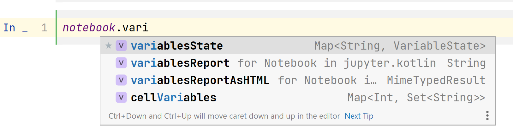

Adding new libraries
- Overview
- Supported integration features
- Dependencies
- Repositories
- Initial imports
- Callbacks after library loading (called once)
- Callbacks before each cell execution
- Callbacks after each cell execution
- Callbacks on cell execution interruption
- Callbacks right before kernel shutdown
- Callbacks on color scheme change
- Results renderers
- Results text renderers
- Throwables renderers
- Variables handling
- Annotated classes handling
- File annotations handling
- Code preprocessing
- Library static resources loading
- Variables reporting
- Internal variables markers
- Typename rules for transitively loaded integration classes
- Minimal kernel version supported by the library
- Library options
- Link to the library site
- Library description
- Creating library descriptor
- Integration using Kotlin API
Overview
Generally, there are two ways of adding new library:
1. Creating JSON library descriptor. It's easy-to-go solution that doesn't even
require you to make any changes to the library itself. You create a JSON file and get the ability to define most
frequently used features such as renderers and initial imports. This descriptor is loaded into notebook
with help of %use line magic. Exact syntax depends on where the descriptor is located.
2. Integration using Kotlin API. Here, you define an integration class
in your library code (or you can create a separate project for integration if it's a library you don't maintain).
You can then use all available integration features in this case. Integration is loaded automatically when
the JAR containing META-INF/kotlin-jupyter-libraries/libraries.json file with the integration class name in it
is added to the current notebook classpath. It can be done with @file:DependsOn annotation or with help of
descriptor (see above) that defines the corresponding dependency. Additionally, it is possible to write tests
for this kind of integrations.
Library integrations regardless of the way they are defined may define dependencies
and some callbacks (code executions). Dependencies may contain Kotlin API based integrations, and code executions
may contain %use statements which means that library integrations may load other libraries, and so on. Don't
hesitate to rely on this feature.
Summing up, if you want to use a feature from the table below, you can do one of the following:
- If the feature is supported in descriptor API, you can create a JSON file containing this feature description as it is described below.
This JSON file is then loaded into notebook via
%useline magic. - If the feature is supported in descriptor API, you can load corresponding JSON string directly using
loadLibraryDescriptormethod inside notebook cell. - You can add the feature directly from the notebook cell using
USE {}method and taking corresponding methods from "JupyterIntegration API" column, i.e. - You can add the feature directly from the notebook cell if you have an instance of
LibraryDefinition(that could be created i.e. usinglibraryDefinition {}method), using following syntax: - Inside a Kotlin JVM library, you can create a class implementing
LibraryDefinition/LibraryDefinitionProducerin one of the following ways:- Just create a direct implementor of
LibraryDefinition. Override properties defined in "LibraryDefinition API" column - Extend
LibraryDefinitionImpl. Set its properties defined in "LibraryDefinition API" column - Implement
JupyterIntegration. OverrideBuilder.onLoadedmethod and use methods fromJupyterIntegration APIcolumn This class is to be loaded into notebook via%usecommand along with the whole library artifact. To let the notebook know about this class, you should adjust the build correspondingly. If you don't adjust the build, class will not be loaded, but you can still load this class from the notebook usingloadLibraryDefinitions()orloadLibraryProducers()methods.
- Just create a direct implementor of
Supported integration features
All supported integration features are given in the following table. You can also learn the API using this interactive guide.
| Feature | Descriptor API | LibraryDefinition API | JupyterIntegration API |
|---|---|---|---|
| Dependencies | dependencies |
dependencies |
dependencies() |
| Repositories | repositories |
repositories |
repositories()addRepository()repository() |
| Initial imports | imports |
imports |
import()importPackage() |
| Callbacks after library loading (called once) | init |
init |
onLoaded{} |
| Callbacks before each cell execution | initCell |
initCell |
beforeCellExecution{} |
| Callbacks after each cell execution | - | afterCellExecution |
afterCellExecution{} |
| Callbacks on cell execution interruption | - | interruptionCallbacks |
onInterrupt{} |
| Callbacks right before kernel shutdown | shutdown |
shutdown |
onShutdown{} |
| Callbacks on color scheme change | - | colorSchemeChangedCallbacks |
onColorSchemeChange{} |
| Results renderers | renderers |
renderers |
addRenderer()render<T>{}renderWithHost<T>{} |
| Results text renderers | - | textRenderers |
addTextRenderer() |
| Throwables renderers | - | throwableRenderers |
addThrowableRenderer()renderThrowable<T>{} |
| Variables handling | - | converters |
addTypeConverter()onVariable{}updateVariable{}onVariableByRuntimeType{}updateVariableByRuntimeType{} |
| Annotated classes handling | - | classAnnotations |
addClassAnnotationHandler()onClassAnnotation<T>{} |
| File annotations handling | - | fileAnnotations |
addFileAnnotationHanlder()onFileAnnotation<T>{} |
| Code preprocessing | - | codePreprocessors |
addCodePreprocessor()preprocessCodeWithLibraries{}preprocessCode{} |
| Library static resources loading | resources |
resources |
resource() |
| Internal variables markers | - | internalVariablesMarkers |
markVariableInternal() |
| Typename rules for transitively loaded integration classes | integrationTypeNameRules |
integrationTypeNameRules |
addIntegrationTypeNameRule()acceptIntegrationTypeNameIf{}discardIntegrationTypeNameIf{} |
| Minimal kernel version supported by the library | minKernelVersion |
minKernelVersion |
setMinimalKernelVersion() |
| Library options | properties |
options |
addOption()addOptions() |
| Link to the library site, used to generate README | link |
website |
setWebsite() |
| Library description, used to generate README | description |
description |
setDescription() |
Dependencies
It doesn't matter what API you're using for adding dependencies, they are just Kotlin strings in the end.
These are strings describing notebook dependencies:
- Coordinates of Maven dependencies in form of <group>:<artifact>:<version>
- Absolute paths to the local JAR files
- Absolute paths to the local directories containing classes
Mind the following:
- compile and runtime scopes of dependencies are resolved transitively, but they all are added to
both compile and runtime classpath. That's why you may see undesired variants offered in completion
- In Kotlin Notebook, sources of the dependencies are being resolved and included into response metadata.
In other clients, they do not. To control this behavior, use SessionOptions.resolveSources
- MPP libraries are usually not resolved by Maven resolver. You should either use jvm variants of these
artifacts or enable experimental multiplatform resolution with SessionOptions.resolveMpp
- To show current notebook classpath, use :classpath command
Descriptor API
JupyterIntegration API
Repositories
Repositories are strings describing where the dependencies come from: - Maven repositories (URLs + possible credentials) - Local directories, relatively to which local dependencies are resolved
Maven repositories might have credentials.
Descriptor API
JupyterIntegration API
Initial imports
Imports are just import declarations that are used by all the following cells. They could be star-ended and usual
Descriptor API
JupyterIntegration API
Callbacks after library loading (called once)
Code that is executed - and in case of descriptor API also compiled - right after library loading In descriptor API codes are executed separately and not merged into one snippet
Descriptor API
JupyterIntegration API
Callbacks before each cell execution
Code that is executed - and in case of descriptor API also compiled - right before each user-initiated cell execution In descriptor API codes are executed separately and not merged into one snippet
Descriptor API
JupyterIntegration API
Callbacks after each cell execution
Code that is executed right after each user-initiated cell execution.
JupyterIntegration API
Callbacks on cell execution interruption
Code that is executed when cell execution was interrupted by user.
JupyterIntegration API
Callbacks right before kernel shutdown
Code that is executed when user initiated a kernel shutdown.
Descriptor API
JupyterIntegration API
Callbacks on color scheme change
Code that is executed when the user changes color scheme in the IDE with the notebook opened and session started. It doesn't work this way in the clients different from Kotlin Notebook, but it's safe to use in any client.
JupyterIntegration API
Results renderers
See information about rendering
Descriptor API
JupyterIntegration API
Results text renderers
See information about rendering
JupyterIntegration API
Throwables renderers
See information about rendering
JupyterIntegration API
Variables handling
Variables handlers are run for each applicable property of
executed snippets. They also give access to KotlinKernelHost, so it's possible to execute code there.
See corresponding methods documentation for more information.
JupyterIntegration API
Annotated classes handling
If you have an annotation with runtime retention, you can mark a cell's class with this annotation, and marked classes could be processed then. Annotations arguments are not available in this type of callback, but this API should become more consistent in the future versions of kernel.
JupyterIntegration API
File annotations handling
You can add file-level annotations to the code snippets. Examples of such annotations are @file:DependsOn() and
@file:Repository() that are used by kernel to add dependencies to the notebook. In the callback you have
access to the annotation object and can access assigned annotation properties.
JupyterIntegration API
Code preprocessing
Code written by user could be amended in any way before execution. One of such transformations is magics preprocessing that are cut off of the code and specifically processed. It's possible to write your own preprocessor: it gets the code and should return amended code. Preprocessors are applied one after another depending on their priority and order.
JupyterIntegration API
Library static resources loading
Static resources such as JS and CSS files could be used by the library producing any HTML. Generally, some specific wrappers should be written to load resources correctly. You can do it yourself or let kernel infrastructure doing it for you. Resource bundles builder DSL is defined and documented here
JupyterIntegration API
Variables reporting
You can see what variables have been defined in the notebook - either in plain text or in HTML form 
Internal variables markers
To ignore some variables in the variable report, mark these variables as internal
JupyterIntegration API
Typename rules for transitively loaded integration classes
As it was mentioned before, libraries can load other libraries transitively: either by executing %use ... as
a part of the initialization code or by including a dependency that contains an integration. By default, all
integration classes found in the dependencies, are loaded. But you can turn off loading of some integrations
by using typename rules for skipping them. At the same time, library can load its integration class forcefully
specifying "accepting" typename rule, so that even if typename is disabled by the loader library, corresponding
class will be loaded.
Descriptor API
JupyterIntegration API
Minimal kernel version supported by the library
You can define minimal kernel version that is supported by the library integration.
In JupyterIntegration API it's also possible to check notebook.kernelVersion in a way you want.
Descriptor API
JupyterIntegration API
Library options
Library options serve several goals: - extract some frequently updatable parts of the library descriptors (such as library versions) - assist Renovate GitHub app to update libraries versions - pass some values transitively in library loading so that libraries might know through what other libraries they were loaded
Important! Give more unique names for the options of your library because these options could override some other options, and it may lead to unexpected quirks
Descriptor API
Options ending with -renovate-hint are ignored in descriptors and shouldn't be visible
JupyterIntegration API
Link to the library site
Library integration might have a link to the library's site.
They are embedded into the README and to the :help command, but only for descriptors.
Descriptor API
JupyterIntegration API
Library description
Library integration might have a description.
They are embedded into the README and to the :help command, but only for descriptors.
Descriptor API
JupyterIntegration API
Creating library descriptor
To support new JVM library and make it available via %use magic command you need to create a library descriptor for it.
Check libraries repository to see examples of library descriptors.
Library descriptor is a <libName>.json file with the following fields:
- properties: a dictionary of properties that are used within library descriptor
- description: a short library description which is used for generating libraries list in README
- link: a link to library homepage. This link will be displayed in :help command
- minKernelVersion: a minimal version of Kotlin kernel which may be used with this descriptor
- repositories: a list of maven or ivy repositories to search for dependencies
- dependencies: a list of library dependencies
- imports: a list of default imports for library
- init: a list of code snippets to be executed when library is included
- initCell: a list of code snippets to be executed before execution of any cell
- shutdown: a list of code snippets to be executed on kernel shutdown. Any cleanup code goes here
- renderers: a mapping from fully qualified names of types to be rendered to the Kotlin expression returning output value.
Source object is referenced as $it
- resources: a list of JS/CSS resources. See this descriptor for example
- integrationTypeNameRules: a list of rules for integration classes which are about to be loaded transitively. Each rule has the form [+|-]:<pattern> where + or - denotes if this pattern is accepted or declined. Pattern may consist of any characters. Special combinations are allowed: ? (any single character or no character), * (any character sequence excluding dot), ** (any character sequence).
*All fields are optional
For the most relevant specification see org.jetbrains.kotlinx.jupyter.libraries.LibraryDescriptor class.
Name of the file should have the <name>.json format where <name> is an argument for '%use' command
Library properties can be used in any parts of library descriptor as $property
To register new library descriptor:
1. For private usage - create it anywhere on your computer and reference it using file syntax.
2. Alternative way for private usage - create descriptor in .jupyter_kotlin/libraries folder and reference
it using "default" syntax
3. For sharing with community - commit it to libraries repository and create pull request.
If you are maintaining some library and want to update your library descriptor, create pull request with your update.
After your request is accepted, new version of your library will be available to all Kotlin Jupyter users
immediately on next kernel startup (no kernel update is needed) - but only if they use %useLatestDescriptors magic.
If not, kernel update is needed.
Integration using Kotlin API
You may also add a Kotlin kernel integration to your library using a Gradle plugin.
In the following code snippets <jupyterApiVersion> is one of the published versions from the link above.
It is encouraged to use the latest stable version.
First, add the plugin dependency into your buildscript.
For build.gradle:
For build.gradle.kts:
This plugin adds following dependencies to your project:
| Artifact | Gradle option to exclude/include | Enabled by default | Dependency scope | Method for adding dependency manually |
|---|---|---|---|---|
kotlin-jupyter-api |
kotlin.jupyter.add.api |
yes | compileOnly |
addApiDependency(version: String?) |
kotlin-jupyter-api-annotations |
kotlin.jupyter.add.scanner |
no | compileOnly |
addScannerDependency(version: String?) |
kotlin-jupyter-test-kit |
kotlin.jupyter.add.testkit |
yes | testImplementation |
addTestKitDependency(version: String?) |
You may turn on / turn off the dependency with its default version (version of the plugin)
by setting corresponding Gradle option to true or false.
If the corresponding option is set to false (by default or in your setup), you still
can add it manually using the method from the table inside kotlinJupyter extension like that:
Adding library integration using KSP plugin
If you are OK with using KSP, you can use annotations to mark integration classes.
First, enable kotlin-jupyter-api-annotations dependency by adding following line to your gradle.properties:
Then, implement org.jetbrains.kotlinx.jupyter.api.libraries.LibraryDefinitionProducer or
org.jetbrains.kotlinx.jupyter.api.libraries.LibraryDefinition and mark implementation with
JupyterLibrary annotation:
For more complicated example see integration of dataframe library.
For a further information see docs for:
- org.jetbrains.kotlinx.jupyter.api.libraries.JupyterIntegration
- org.jetbrains.kotlinx.jupyter.api.libraries.LibraryDefinitionProducer
- org.jetbrains.kotlinx.jupyter.api.libraries.LibraryDefinition
Adding library integration avoiding use of annotation processor
You may want not to use KSP plugin for implementations detection. Then you may refer your implementations right in your buildscript. Note that no checking for existence will be performed in this case.
The following example shows how to refer aforementioned Integration class in your buildscript.
Obviously, in this case you shouldn't mark it with JupyterLibrary annotation.
For build.gradle:
For build.gradle.kts:
Integration testing for the integration logic
You may want to automatically check if your library integrates correctly into kernel. To achieve this, inherit your
test class from org.jetbrains.kotlinx.jupyter.testkit.JupyterReplTestCase and use its methods to execute cells.
Your library integration descriptors should be already on classpath and will be loaded automatically by the test logic,
you don't need to use %use magic or DependsOn annotation to switch on your library. But you may use magics and
annotations for other purposes, as usual.
The artifact containing test templates is included automatically into testImplementation configuration if you
use the Gradle plugin. You may turn this behavior off by setting kotlin.jupyter.add.testkit Gradle property
to false. If you want to include this artifact into your build manually, you'll find the instructions
here.
For the examples of integration testing see org.jetbrains.kotlinx.jupyter.testkit.test.JupyterReplTestingTest in
this repository or related tests in DataFrame.
Integration using other build systems
If you don't use Gradle as a build system, there is an alternative way.
First, add org.jetbrains.kotlinx:kotlin-jupyter-api:<jupyterApiVersion> as
a compile dependency. See configuration instructions for different build systems
here
Then add one or more integration classes. They may be derived from
LibraryDefinitionProducer or from LibraryDefinition as described above.
Note that you don't need @JupyterLibrary annotation in this scenario.
Finally, add file META-INF/kotlin-jupyter-libraries/libraries.json to the JAR
resources. This file should contain FQNs of all integration classes in the JSON form:
LibraryDefinition should be added to the definitions array.
Classes derived from LibraryDefinitionProducer should be added to the producers array.